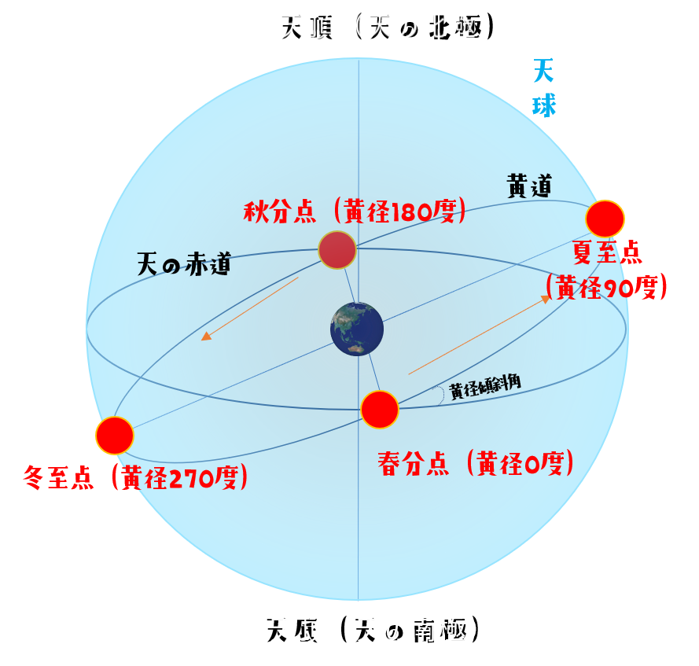
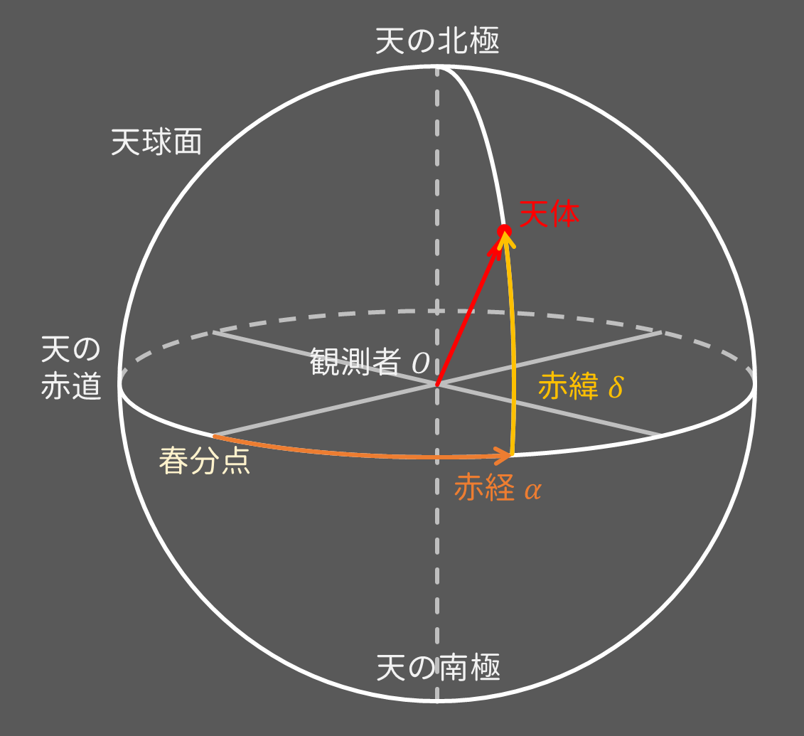

太陽と惑星の★赤経★赤緯★地心距離★グリニッジ時角を示し
更に、太陽と惑星の位置を2次元・3次元グラフで示します。
⚠水星のデータはありません⚠
⚠2009年～2022年12月31日のみです⚠


＜海上保安庁 海洋情報部 天文・暦情報＞
https://www1.kaiho.mlit.go.jp/KOHO/index.html
＜理科年表オフィシャルサイト＞
https://www.rikanenpyo.jp/kaisetsu/koyomi/koyomi_012.html
＜天球座標とその変換 ― ISAS/JAXA＞
https://www.ir.isas.jaxa.jp/~maruma/kougi/sec2_190411.pdf